2026-10-30 · 来源/裁决/候选几何分别保留
已保存原话“W3-U、W3-D 均正确”“W4-U、W4-D 均正确”，绑定原送审请求及照片。两条M2上端经V2接B-U，下端经V2接B-D；上端3×2、下端5×2仍为AI候选孔组，物理孔数/尺寸未知。
先只向左扩视口750，再追加两条M3的来源延续块、新增W3/W4、最后加入四组已审V2候选。现在39金属候选、26已审局部接口、165设计候选孔。旧22裁决和133孔边界/中心保持；旧骨架/宽度/源锚点/原局部块保持。26组完整候选包围/间距通过，不等于真实PDK DRC或精密原图投影验收。
W3/W4的M1/V1尚未加入工作接口。W3上端像独立下突台阶；W4上端更靠近细竖向M1的起点，需要区分孔和细线/拍屏纹理，不能照搬W3。M2图已审V2不能反充V1身份。
M1/V1/M2/V2/M3切换 · SVG · PNG大图
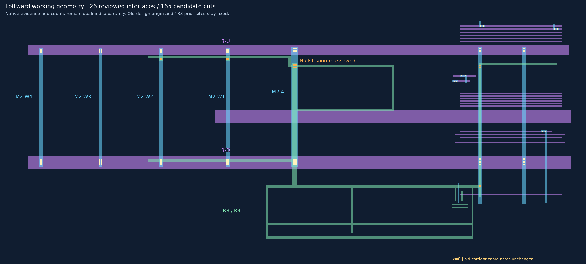
从右至左为已审W2、W3、W4。每张并排图左为M1、右为M2，各用本层原生坐标，没有投影；橙框为M1搜索范围，蓝框为M2承载搜索范围。
| 位置 | 待判断 | 两层大邻域 |
|---|---|---|
| W3-N | M1橙框是否含V1，并接到蓝框W3？ | W3-N两层放大图 |
| W3-S | M1橙框是否含V1，并接到蓝框W3？ | W3-S两层放大图 |
| W4-N | M1橙框是否含V1，并接到蓝框W4？特别区分细竖线起点和孔组。 | W4-N两层放大图 |
| W4-S | M1橙框是否含V1，并接到蓝框W4？ | W4-S两层放大图 |
可回复“W3-N、W3-S、W4-N、W4-S均为V1并接对应M2”，或逐项修正。不要求孔数，不重问四处已审V2和旧W2/W1等接口。新V1尚未进入工作层；普通交叉、邻近细竖线不自动合并，不宣称物理无孔或全网完成。
范围[220, 1730, 1400, 2950]，整数放大1倍。
无标记原图 · 标记大图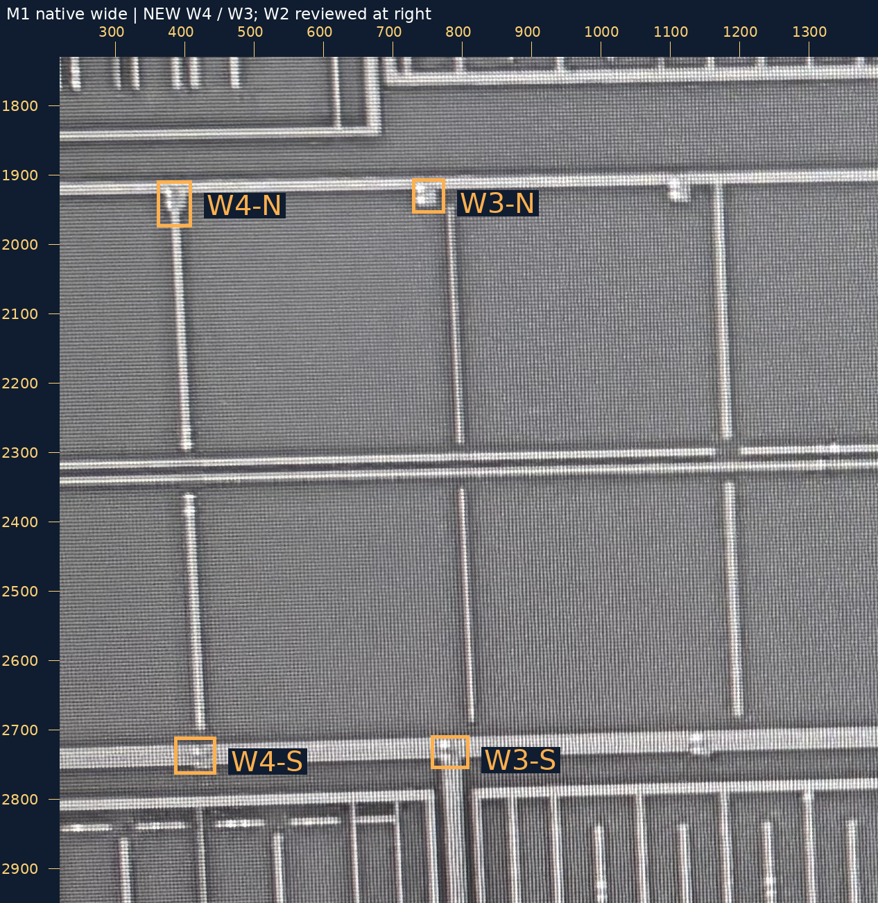
范围[220, 1730, 1400, 2950]，整数放大1倍。
无标记原图 · 标记大图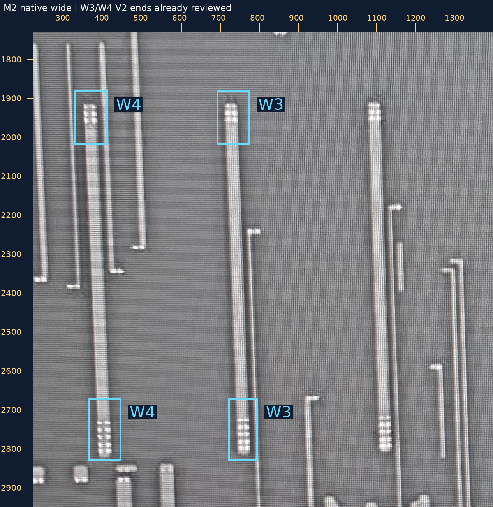
范围[510, 1750, 1060, 2200]，整数放大2倍。
无标记原图 · 标记大图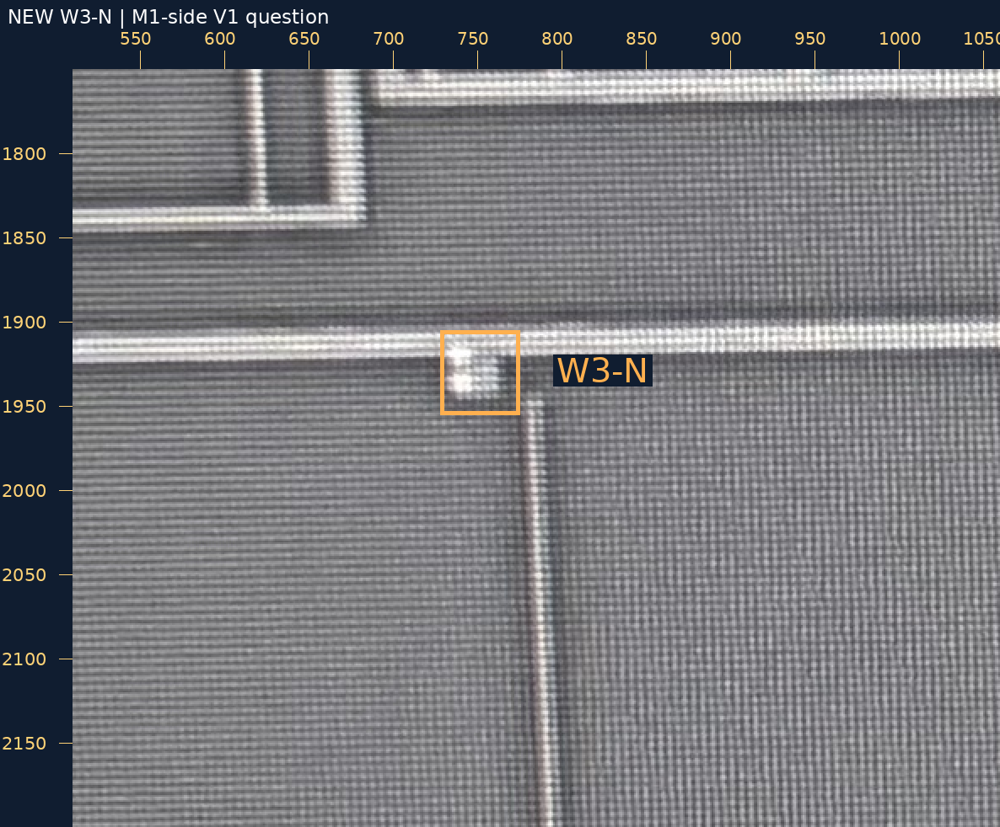
范围[510, 1730, 1060, 2180]，整数放大2倍。
无标记原图 · 标记大图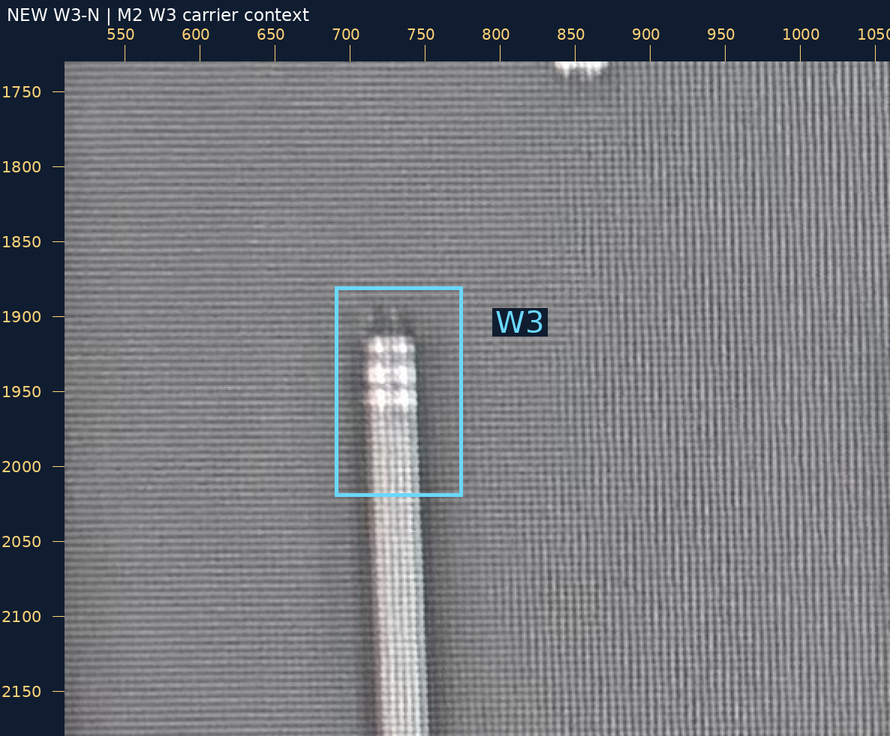
范围[510, 2480, 1060, 2930]，整数放大2倍。
无标记原图 · 标记大图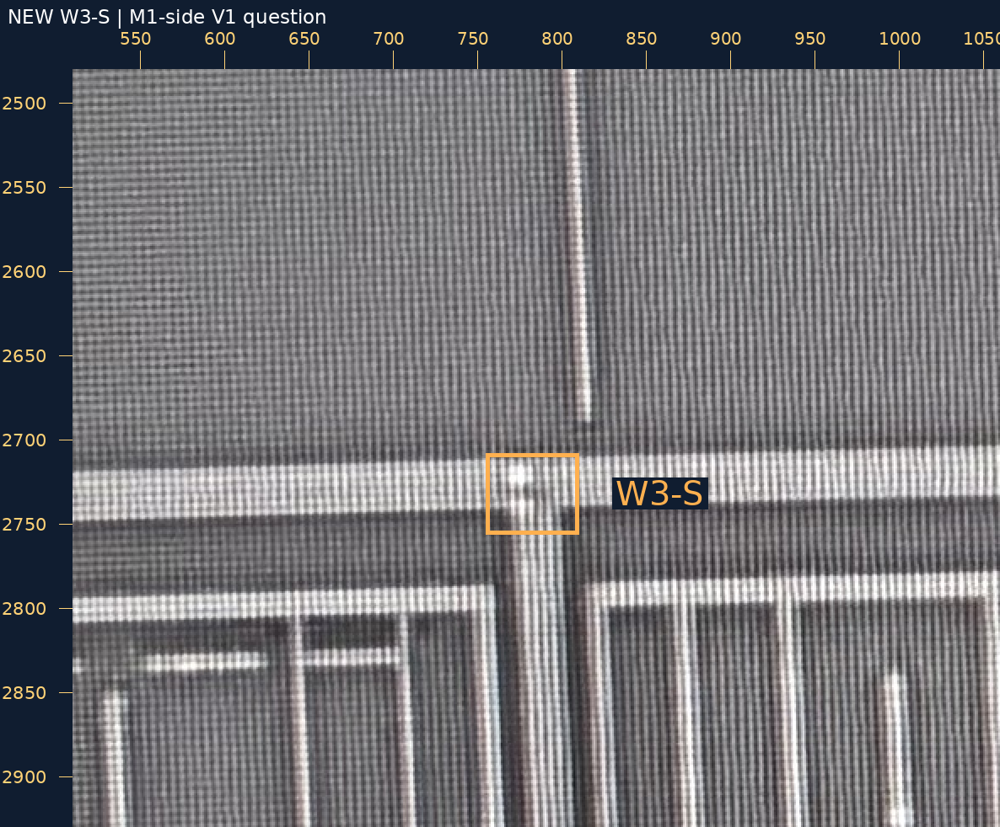
范围[510, 2500, 1060, 2950]，整数放大2倍。
无标记原图 · 标记大图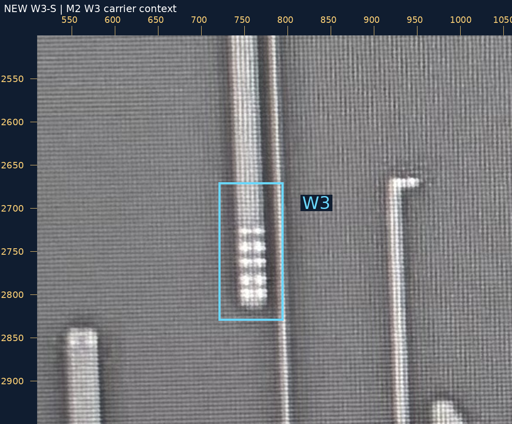
范围[140, 1750, 690, 2200]，整数放大2倍。
无标记原图 · 标记大图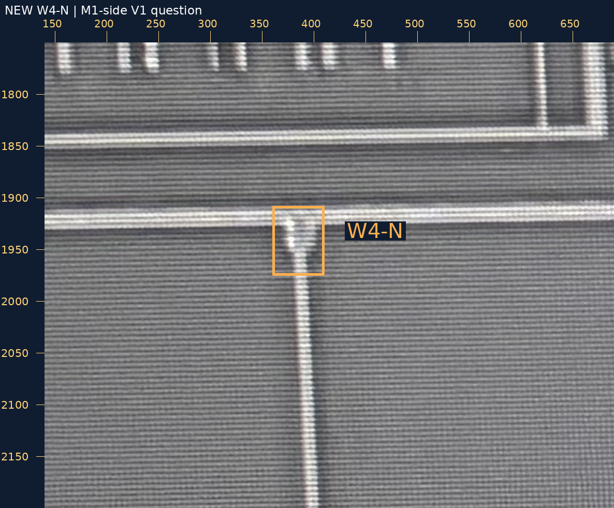
范围[140, 1730, 690, 2180]，整数放大2倍。
无标记原图 · 标记大图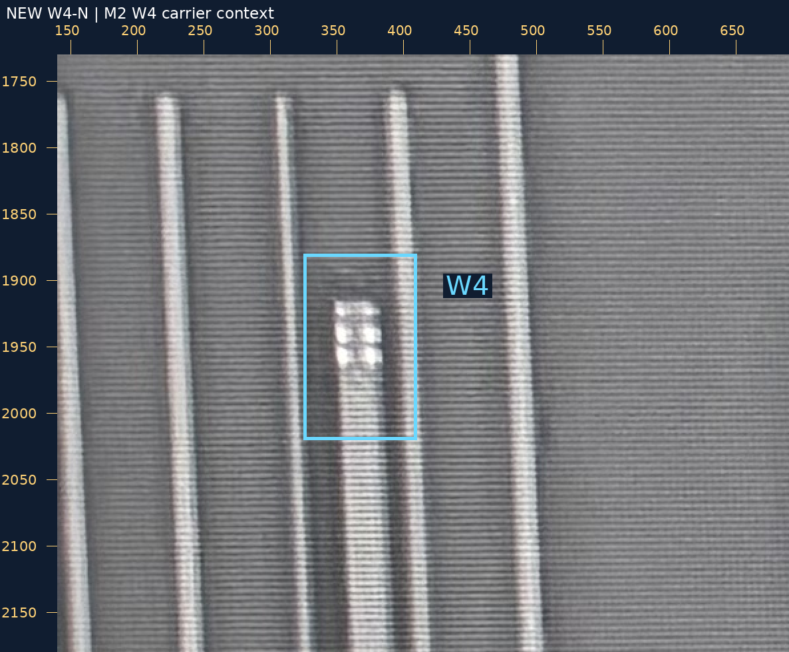
范围[140, 2480, 690, 2930]，整数放大2倍。
无标记原图 · 标记大图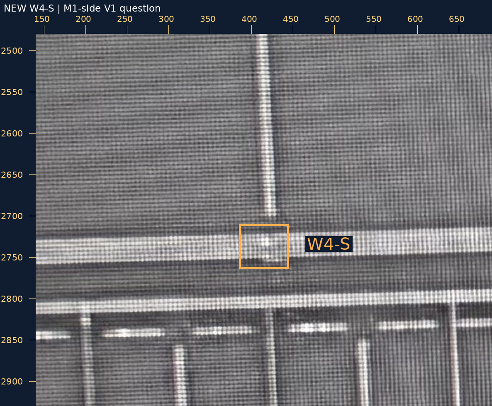
范围[140, 2500, 690, 2950]，整数放大2倍。
无标记原图 · 标记大图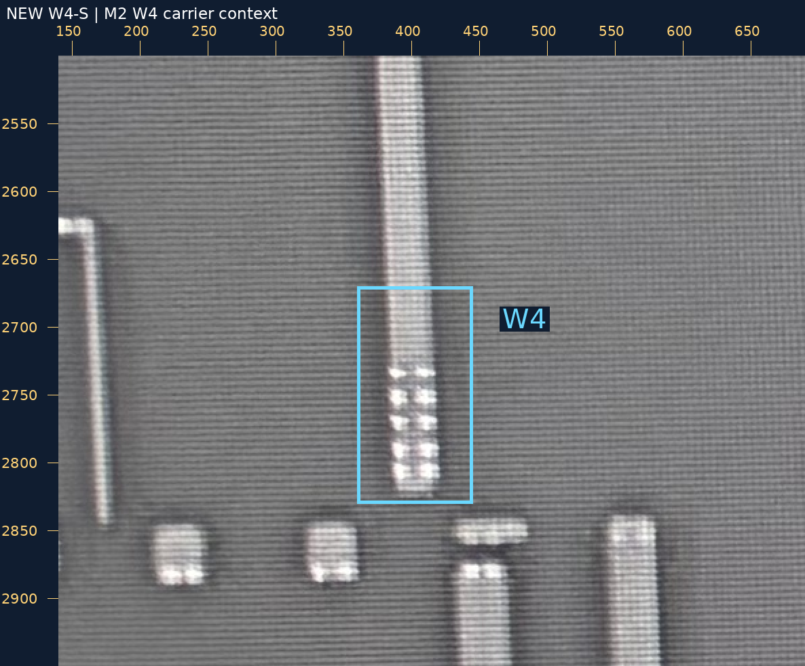
四V2人审 · 恢复请求 · M1来源观察 · 新V1裁决请求 · 验证
source_to_design_transform=null，geometry_adopted=false，net_edges=[]，complete_network=false。README/site/gh-pages保持；浏览器交互未实测。